About Me
I am a final-year Ph.D. student in Computer Science at the Institute for Interdisciplinary Information Sciences (IIIS), Tsinghua University, advised by Prof. Li Yi.
I am currently a Research Intern at NVIDIA Research, where I work on in-context learning for Physical AI, mentored by Dr. Han Cai, with guidance from Prof. Song Han. Previously, I was a Researcher at Memories.ai, focusing on efficient video MLLMs, and a Research Intern with the Spatial Intelligence Group at Microsoft Research Asia, where I studied human–object interaction.
My research focuses on self-evolving Physical AI: developing embodied agents that learn in context, adapt from experience, and continually improve through interaction with the physical world. My research spans three complementary directions:
- 4D World Understanding and Egocentric HOI: modeling dynamic environments and human–object interactions across space and time, including HOI4D (CVPR 2022), LeaF (ICCV 2023), and PhysReaction (ACM MM 2024 Oral).
- Unified Multimodal Representation Learning: learning transferable representations across vision, language, and 3D/4D signals, including TupleInfoNCE (ICCV 2021) and CrossVideo (ICRA 2024), and OmniRetriever (EMNLP 2026 Main).
- Efficient Multimodal Intelligence: building efficient models for visual and long-context understanding, including MAP (CVPR 2025), ST-Think (WACV 2026), and MARC (ICLR 2026).
News
- Aug 2026 OmniRetriever accepted to EMNLP 2026 Main Conference.
- Aug 2026 HOI-JEPA accepted to ECCV-HuMoWM 2026.
- Jan 2026 MARC (RL-based Token Compression for VideoLLM) accepted to ICLR 2026.
- Nov 2025 PointNet4D and ST-Think accepted to WACV 2026.
- Aug 2025 OnlineHOI accepted to ACM MM 2025.
- Jul 2025 Culture3D accepted to ICCV 2025.
- Jul 2025 X-LeBench accepted to EMNLP 2025.
- May 2025 MutualNeRF accepted to UAI 2025.
- Feb 2025 MAP and MobileH2R accepted to CVPR 2025.
- Nov 2024 InterHuman accepted to 3DV 2025.
- Jul 2024 PhysReaction accepted to ACM MM 2024 (Oral).
- Feb 2024 Physics-aware HOI Denoising accepted to CVPR 2024.
- Jan 2024 CrossVideo accepted to ICRA 2024.
- Jul 2023 LeaF accepted to ICCV 2023.
- Feb 2023 C2P accepted to CVPR 2023.
- Jul 2022 PPTr accepted to ECCV 2022.
- Feb 2022 HOI4D accepted to CVPR 2022.
- Jul 2021 TupleInfoNCE accepted to ICCV 2021.
Publications
* denotes equal contribution, ^ denotes corresponding author.
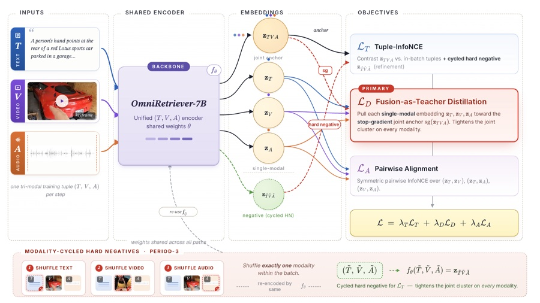
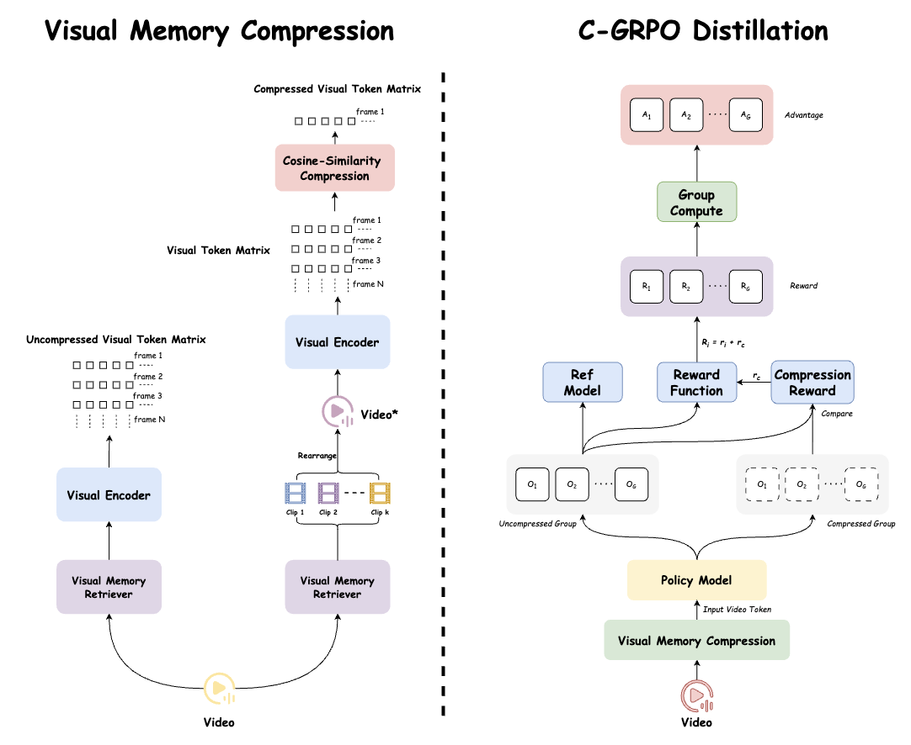
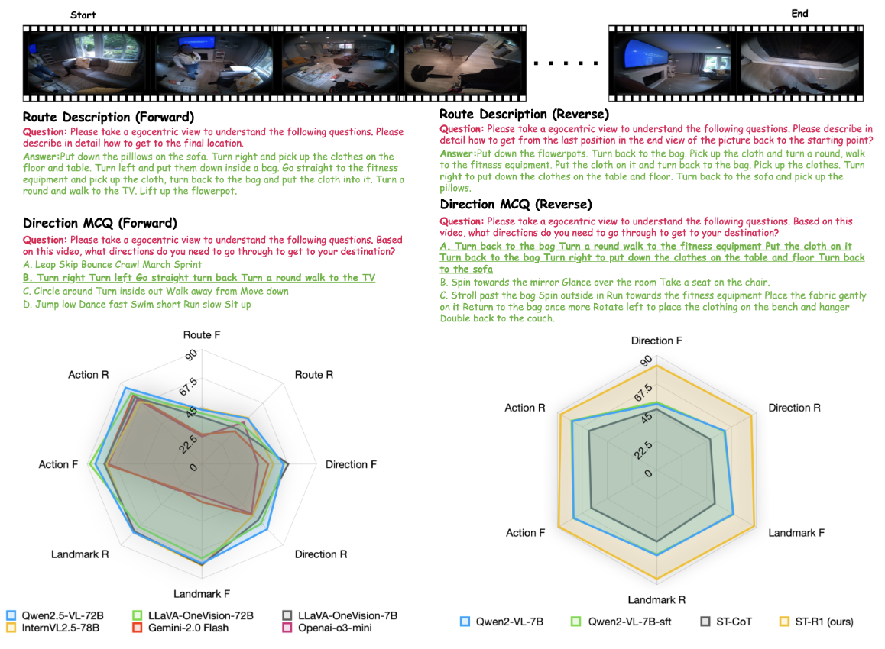
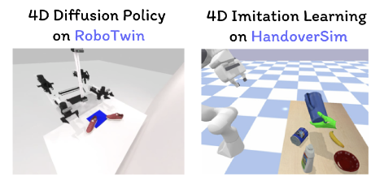
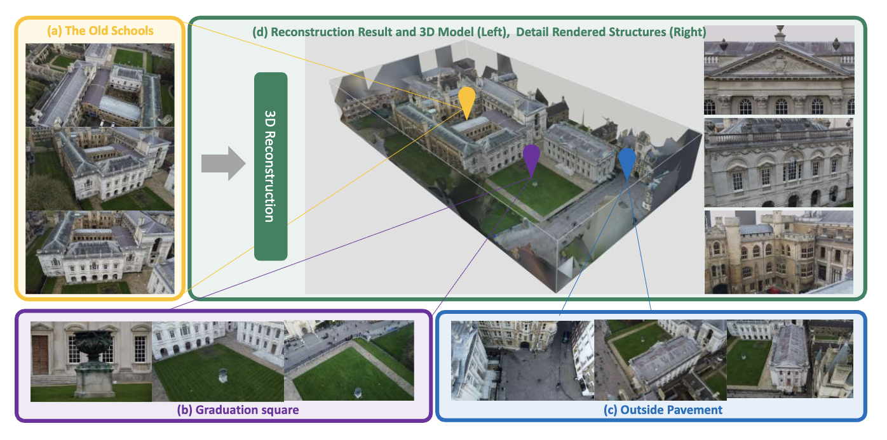
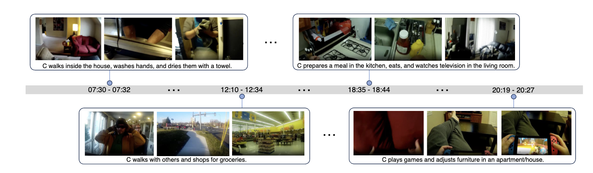
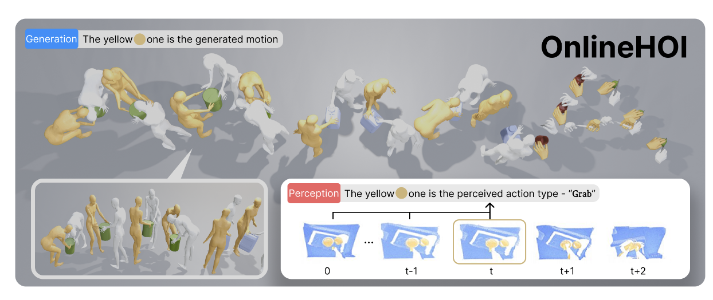
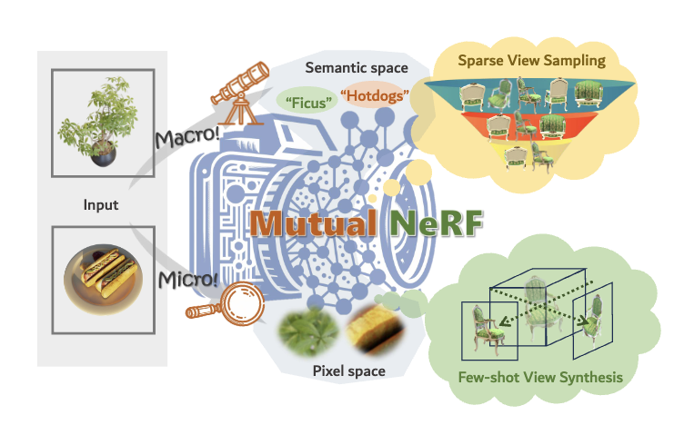
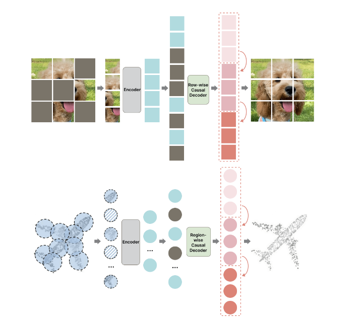
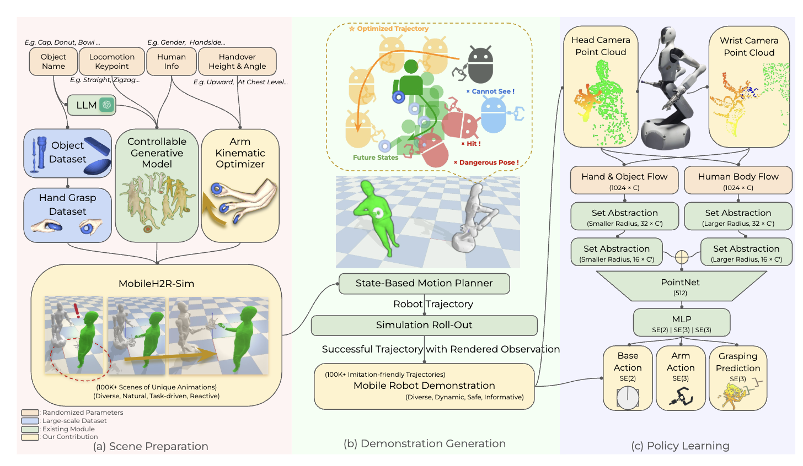
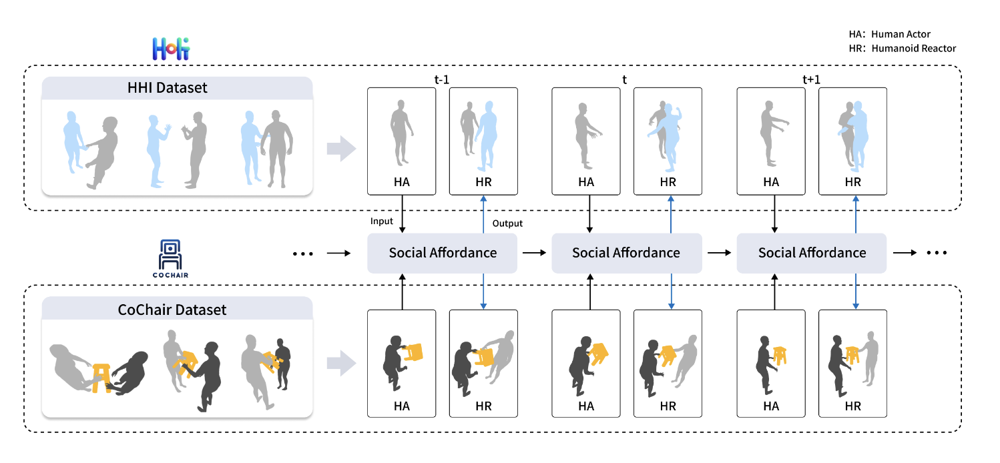
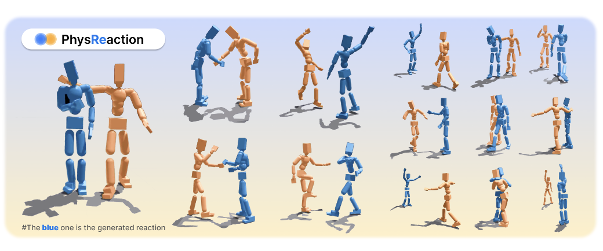
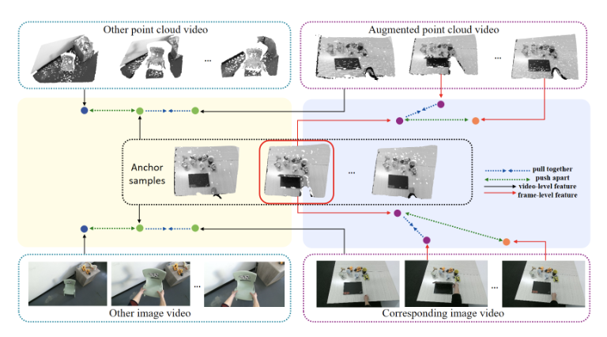
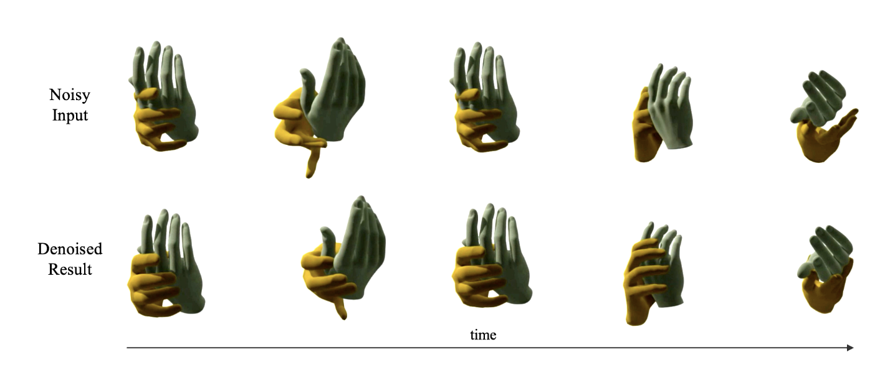
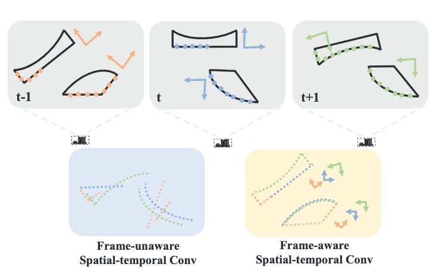
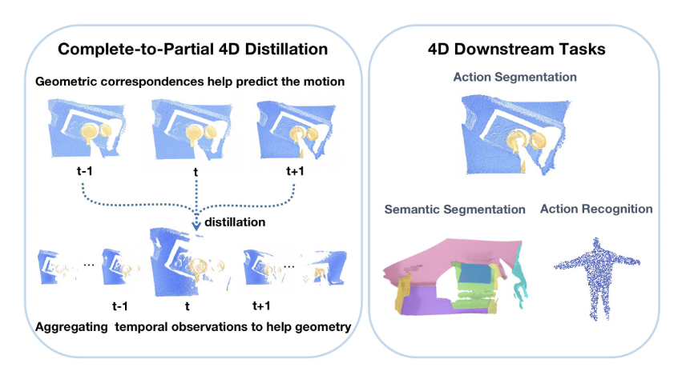
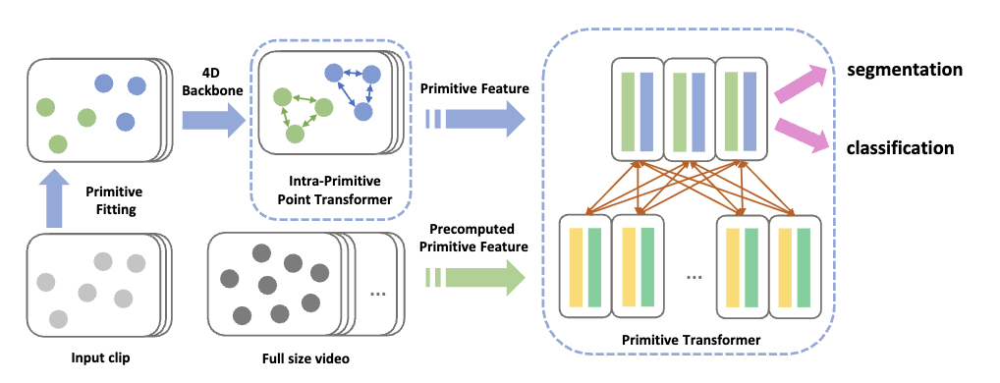
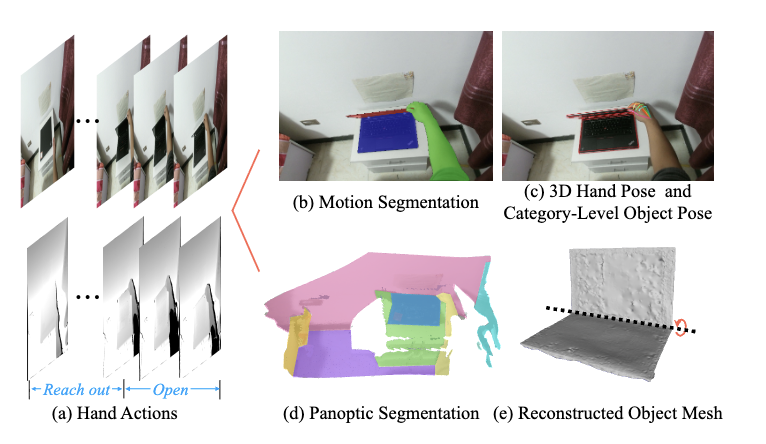
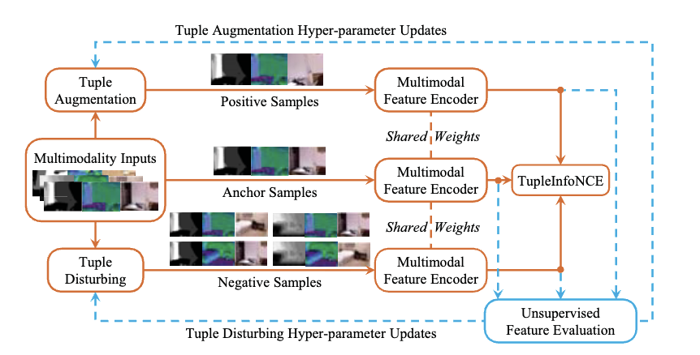
Academic Services
- Conference Reviewer: CVPR, ICCV, ECCV, ACM MM, ICLR, NeurIPS, ICML, 3DV, WACV, AAAI
- Journal Reviewer: TMM
- Workshop Organizer: CVPR 2023 Workshop on 4D Hand Object Interaction